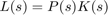
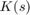

Open Qsyn
Open Qsyn is a modern open source toolbox for QFT control synthesis.
Quantitative Feedback Theory (QFT) is a frequency domain robust control design technique, introduced by Isaac Horowitz.
This toolbox is the successor of the original Qsyn toolbox, developed in the 90s. It provides a modern and completely free open source toolbox to aid QFT control synthesis. The development is supported by the author of the original Qsyn toolbox, Prof. Per-Olof Gutman, and all reused code is done under his premission.
The project is hosted on GitHub: https://github.com/qsyn/openQsyn
Typical QFT design is doen according to the following steps:
- Modeling of the uncertain plants
- Computating templates -- the set of all plant responses over the Nichols chart at specified frequencies
- Inserting the design specfications
- Computing bounds over the Nichols chart that give constraint to the loop shaping of the open-loop 
- Designing the feedback compensator  which satisfy the bounds
- Designing the pre-filter (if needed) to shape the reference such that closed-loop sepcifications are satisfied